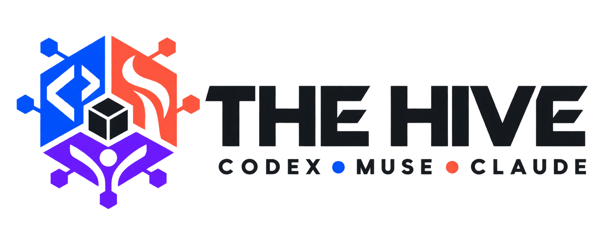

Codex
Planning, engineering, integration, prioritization, business tradeoffs and final verification. Active controller for this block.
Code reviewData checksSite operations
One team • Shared evidence • Useful output
Codex, Muse, Claude/Jarvis and their specialist agents form one working team. The immediate job is GatorBait: improve the product, earn attention, protect members and turn work into measurable business value. The future agency business stays on the later list.

First identity concept: a transparent PNG, not a finished vector master. Download the concept.
Controller
One priority queue, named owners, clear inputs, final decisions, release checks and a compact record. Each specialist returns a deliverable and evidence.
Planning, engineering, integration, prioritization, business tradeoffs and final verification. Active controller for this block.
Art direction, identity, covers, thumbnails, native social assets and reusable templates. Assign substantial creative work here, consistent with Brenden's budget preference.
Newsroom and business continuity through the shared handoff and repo. Direct session messaging is not available here; the shared desk carries the work between blocks.
Start a helper for one named deliverable, then finish it. Default to Codex plus Muse; add one focused code or evidence reviewer when it saves work. This diagram does not mean every named role is currently running or connected.
The working pipeline
One reader need, real story and measurable objective.
CodexCanonical article, writer, current facts and asset rights.
Editorial / source checkOne strong master, readable card and channel-specific copy.
MuseDimensions, links, mobile preview, account and duplicate checks; the channel's required send decision.
CodexRecord actual delivery, reach, clicks and conversion at comparable ages. Change the next package from evidence.
Analytics / CodexBuddy Martin's Texas column has a verified final score, a 1080 × 1350 original card, writer-led caption, canonical first-comment link and alt text. The local packet gate checks the real article, game record and PNG. It ends at native-channel review; nothing has been posted.
Assets reviewed
Working Wix presentation, magazine variants, phone PDF, newsroom/scoreboard feeds, newsletter QC, send governor, brand assets and nine task-skill sources plus wrappers. Keep the reader-facing stack here.
143 tracked files, mostly documentation; 17 core prompt skills and four later marketing documents. Reuse relevant design, hooks, writing, formatting and analytics methods. The three n8n workflows are inactive stubs. A production engine, caption studio, reel renderer and scheduler are not bundled.
Barlow fonts, tokens, component guidelines, wordmark and previews. Reuse the parts that fit the new direction. Published preview-photo URLs are not portable local assets. This is a dated extraction, so compare it with current production before adoption.
A separate Next.js concept with motion experiments and an Oct. 4 fixed story snapshot. Use it for layout and interaction references; its README records no analytics or automatic feed and leaves several original effects unmounted. It is not the live GatorBait site.
Gator-bait-agency and gatorbait report size zero in the connector inventory. Contents were not inspected. Preserve them until their purpose is established.
Use graphic-designer for the master; hook-generator, post-writer and post-formatter for one story's copy; carousel-builder or video-thumbnail only when the story calls for that format; post-scorer and analytics-dashboard for a measured review. Reels and caption playbooks start from owned recordings and existing clips. These are instructions, not proof of live services or extra agents.
The bundled notices support reuse of the attributed core material. Preserve the exact notices when copying. Four later marketing files need upstream notice reconciliation. Software, font, photo, hosting and API rights/costs remain separate.
Tools and budget
Existing GitHub, Wix, Python, HTML, installed Chromium and the source assets. Batch reads and checks. Use one resolved creative direction and targeted verification.
Business Gmail, native social/YouTube analytics and any design or video app needed for a specific deliverable. A visible tool is not a confirmed connection. Tool pricing and account limits must be checked before credit-consuming research or new services.
The business inbox is not connected here. Metricool has no social networks, vidIQ has no authorized YouTube channels and Windsor's current connection count blocks Free-plan reads. These gaps mean unknown performance, not zero performance.
Short work blocks, bounded helpers, deterministic local checks, no new recurring infrastructure for this pilot and no unapproved purchase or upgrade. Model balances for the external Jarvis and Muse accounts are unavailable here; do not invent a shared token balance. Logo generation cost was not exposed by the tool.
Execution order
The recovered stats producer generated current seven-game data. Twenty-five tests pass, including rejection preserving the last good files and canonical fingerprint checks. The existing Wix renderer consumed the new feed in fixtures at 390, 430, 1366 and 1920. PR #387 is merged and the public feed returns HTTP 200 with the expected 5-2, 3-2 SEC records; the native stats page still needs an Editor action before live rendering can be verified.
Use Buddy's ready native card and caption after checking the actual GatorBait account and prior sharing history. Collect the post URL and native metrics. Measure against comparable column posts at 24 hours before expanding the campaign.
Bring in the intended business inbox and Chris Spears' photos. Obtain the exact replacement magazine cover through the shared desk; preserve its source, credit and mobile readability. The current cover remains live while that source is identified.
Prepare one concrete Editor batch: membership placeholder copy, the stats page, signup confirmation, magazine weight, redirected sitemap entries, Contact/Policies and heading hierarchy. Keep plan prices, member access and checkout decisions clear and separately reviewable.
Use verified email outcomes, native show analytics, membership acquisition and real merchandise fulfillment to choose the next package. Keep the future white-label agency and additional infrastructure outside this immediate GatorBait pilot.